컴퓨터활용능력-1급 (2004-05-02 기출문제)
1과목: 컴퓨터 일반
1. 한글 Windows 98을 동작시키기 위해 컴퓨터에 전원을 켜면 먼저 윈도우가 동작하기 전에 컴퓨터의 자기진단과 주변기기 점검 등을 실시하게 되는데 이와 같은 기능을 하는 프로그램을 BIOS라고 한다. 이 때 주변기기에 대한 정보는 컴퓨터마다 각기 다르게 되고 SETUP을 해주어야 하는데 이 정보를 저장하기에 적당하지 않은 것은?
- CMOS
- EEPROM
- FLASHROM
- PROM
(정답률: 45%)

2. 다음 중 그래픽 기법의 설명으로 틀린 것은?
- 인터레이싱(Interlacing) : 이미지의 대략적인 모습을 먼저 보여준 다음 점차 자세한 모습을 보여주는 기법
- 모핑(Morping) : 2개의 이미지를 부드럽게 연결하여 변환·통합하는 작업
- 디더링(Dithering) : 제한된 색상을 조합하여 복잡한 색이나 새로운 색을 만드는 작업
- 모델링(Modeling) : 3차원 애니메이션을 만드는 과정중의 하나로 물체의 모형에 명암과 색상을 입혀 사실감을 더해주는 작업
(정답률: 62%)
3. 다음 중 윈도우에서 네트워크 설정에 관한 설명으로 틀린 것은?
- ipconfig를 이용하여 네트워크 설정에 관한 정보를 얻을 수 있다.
- ping을 이용하면 상대방 컴퓨터까지 연결되는 경로를 IP로 표시해 준다.
- ipconfig를 이용하여 네트워크 카드의 물리적 주소(MAC Address)도 확인할 수 있다.
- winipcfg를 이용하여 유동 IP 방식에서 IP주소를 다시 할당받을 수 있다.
(정답률: 64%)
4. 다음 중 한글 Windows 98에서 문자 입력시 기본 언어를 재설정하거나 새로운 언어를 추가하기 위한 제어판의 항목은?
- 키보드
- 날짜 및 시간
- 글꼴
- 내게 필요한 옵션
(정답률: 53%)
5. 모니터에 대한 다음 설명 중 가장 옳지 못한 것은?
- 해상도가 좋을수록 모니터에 나타나는 영상은 선명하다.
- 모니터에 나타나는 작은 점으로 영상을 표현하는 최소 단위를 도트(dot)라고 한다.
- 입출력 장치의 하나로 문자나 그림을 화면에 영상으로 표시해 주는 장치이다.
- PDP, 액정, CRT 등 여러 가지 방식이 사용된다.
(정답률: 74%)
6. 다음에서 Usenet에 대한 설명으로 가장 옳지 못한 것은?
- 분야별로 그룹을 나누어 자신의 의견을 제시하거나 타인의 의견을 수렴할 수 있는 서비스이다.
- 서비스를 받기 위해서는 뉴스 리더 프로그램이 필요하다.
- 그룹 중 han.test는 한글 학습 및 자격시험을 위해 사용되는 그룹이다.
- 뉴스 서비스의 제공을 위해서 NNTP 프로토콜을 이용한다.
(정답률: 59%)
7. 한글 Windows 98의 부팅시 바탕화면이 나온 후에 <시작 프로그램 오류> 메시지가 나오는 경우 오류 메시지가 나오지 않게 하기 위한 방법과 거리가 먼 것은?
- 한글 Windows 98에서는 ‘시작→프로그램→시작 프로그램’으로 이동하여 해당 아이콘을 마우스 오른쪽 버튼으로 클릭하고 ‘삭제’를 선택한다.
- ‘시작→실행’을 선택하여 ‘sysedit’를 입력한 후 ‘win.ini’ 창을 선택한다. ‘run=’ 항목이나 ‘load=' 항목에 지정된 프로그램 중에서 현재 사용되지 않는 프로그램 항목을 삭제한다.
- ‘시작→프로그램→보조 프로그램→시스템 도구→예약된 작업’으로 이동하여 지워지거나 사용되지 않는 프로그램을 삭제한다.
- config.sys와 autoexec.bat 파일의 이름을 변경한다.
(정답률: 64%)
8. 다음에서 컴퓨터 하드웨어에 대한 설명으로 가장 옳지 않은 것은?
- 컴퓨터는 전류가 흐르는 상태(ON)와 흐르지 않는 상태(OFF)가 반복되며 작동하는데 ON/OFF의 전류 흐름에 의해 CPU는 작동한다. 이 전류의 흐름을 클럭 주파수(Clock Frequency)라 하고, 줄여서 클럭(clock)이라고 한다.
- 클럭의 단위는 MHz를 사용하는데 1MHz는 1,000,000Hz를 의미하며, 1Hz는 1초 동안 1,000번의 주기가 반복되는 것을 의미한다.
- CPU가 기본적으로 클럭 주기에 따라 명령을 수행한다고 할 때 이 클럭 값이 높을 수록 CPU는 빠르게 일을 하고 있는 것으로 볼 수 있다.
- 클럭 주파수를 높이기 위해 메인보드로 공급되는 클럭을 CPU 내부에서 두 배로 증가시켜 사용하는 클럭 더블링(Clock Dubling)이란 기술이 486 이후부터 사용되었다.
(정답률: 77%)
9. 컴퓨터 주변장치에서 CPU의 관심을 끌기 위해 발생하는 신호로서 발생한 장치 중 우선 순위가 가장 높은 장치에 이것을 허용한다. 두 개 이상의 하드웨어가 동일한 이것을 사용하면 충돌이 발생하게 되는데 이 때 이것을 무엇이라고 하는가?
- DMA
- I/O
- IRQ
- Plug & Play
(정답률: 74%)
10. 다음 중 FTP에 관한 설명으로 잘못된 것은?
- 인터넷에서 파일을 전송하기 위한 프로토콜이다.
- 다른 컴퓨터로부터 파일을 다운로드 하는 것뿐만 아니라 업로드 하는 것도 가능하다.
- FTP를 위한 포트번호는 21번으로 다른 번호로 변경할 수 없다.
- 계정이 없이 접속할 수 있는 서버를 Anonymous FTP 서버라고 한다.
(정답률: 73%)
11. 다음 중 한글 Windows 98의 배경화면에 대한 설명으로 잘못된 것은?
- 배경화면으로는 *.bmp, *.jpg, *.html, *.pcx, *.doc 등의 파일 형식을 사용할 수 있다.
- 바탕화면의 이미지나 무늬는 사용자의 취향에 맞게 변경할 수 있다.
- 한글 Windows 98에서는 이미 만들어 놓은 무늬를 제공한다.
- 제공되는 무늬는 편집하여 바로 사용될 수 있으나, 이미지는 편집할 수 없다.
(정답률: 48%)
12. 컴퓨터 그래픽에서 그림자나 색상, 농도 등의 변화와 같은 3차원 질감을 넣어 사실감을 표현하는 과정은 무엇인가?
- 렌더링(Rendering)
- 프레이밍(Framing)
- 가상현실(Virtual Reality)
- 시뮬레이션(Simulation)
(정답률: 78%)
13. 다음에서 소프트웨어에 관한 설명으로 틀린 것은?
- 소프트웨어란 컴퓨터를 운영하기 위해 필요한 일련의 명령어들의 집합이다.
- 소프트웨어는 시스템소프트웨어와 응용소프트웨어로 분류할 수 있다.
- 응용소프트웨어란 사용자가 실제 업무 처리를 하기 위해 작성한 프로그램을 말한다.
- Windows, Unix, Linux는 대표적인 응용소프트웨어이다.
(정답률: 68%)
14. 내부 네트워크에서 인터넷으로 나가는 패킷은 그대로 통과시키고, 인터넷에서 내부 네트워크로 들어오는 패킷은 내용을 엄밀히 체크하여 인증된 패킷만 통과시키는 구조로, 해킹 등에 의한 외부로의 정보유출을 막기 위해 사용하는 보안 시스템을 무엇이라 하는가?
- 인증(Authentication) 시스템
- 접근제어(Access Control) 시스템
- 방화벽(Firewall) 시스템
- 침입탐지(Intrusion Dectection) 시스템
(정답률: 79%)
15. 다음에서 한글 Windows 98에서 사용하는 단축키에 대한 설명으로 가장 옳지 않은 것은?
- <Alt> + <Space bar> 키 : 시작 메뉴를 부른다.
- <Alt> + <Tab> 키 : 실행 중인 프로그램들 간에 작업 전환을 한다. <Alt> 키를 누른 상태에서 <Tab> 키를 누르면 실행 중인 프로그램이나 창의 아이콘이 나타나서 선택할 수 있다.
- <Alt> + <Print Screen> 키 : 활성 창을 갈무리(capture)하여 클립보드에 복사한다.
- <Alt> + <Esc> 키 : 실행 중인 프로그램 사이에 작업을 전환한다. 한번씩 누를 때마다 다른 작업 창으로 이동한다.
(정답률: 68%)
16. 다음 중 저작권에 따른 소프트웨어의 분류에 대한 설명으로 틀린 것은?
- 애드웨어 : 광고를 보는 대가로 무료로 사용하는 소프트웨어이다.
- 셰어웨어 : 정식버전이 출시되기 전에 프로그램에 대한 일반인의 평가를 수행하고자 제작된 소프트웨어이다.
- 번들 : 특정한 하드웨어나 소프트웨어를 구매하였을 때 끼워주는 소프트웨어이다.
- 프리웨어 : 개발자가 소스를 공개한 소프트웨어로 제한없이 사용할 수 있는 소프트웨어이다.
(정답률: 75%)
17. 시스템 구성 편집기(sysedit)로 편집할 수 있는 파일로 가장 거리가 먼 것은?
- admin.dll
- config.sys
- win.ini
- autoexec.bat
(정답률: 67%)
18. 인터넷 정보 검색엔진에 관한 설명으로 거리가 먼 것은?
- 인터넷 검색엔진은 로봇, 스파이더, 에이전트, 크롤러 등 정보수집 프로그램을 이용해 대량으로 정보를 수집하고 하이퍼텍스트 기법을 통해 편리하게 정보를 찾아갈 수 있도록 하는 것을 가리킨다
- 주제별 검색엔진은 예술, 정치, 경제, 스포츠 등 각 분야별로 분류되어있는 항목을 마우스로 클릭 하여 그 분야의 세부항목으로 들어가서 원하는 정보를 찾는 방식이다.
- 키워드형 검색엔진은 찾으려는 정보에 대한 키워드를 입력하여 정보를 검색할 수 있는 방법으로 키워드가 정확하지 않을 때도 정보를 신속하게 찾을 수 있다.
- 메타검색엔진이란 로봇 에이전트를 이용하여 여러 검색엔진을 참조해 정보를 찾아주는 검색엔진을 말한다.
(정답률: 66%)
19. IP주소 128.11.3.31은 어느 클래스에 포함되는가?
- A Class
- B Class
- C Class
- D Class
(정답률: 54%)
20. 동영상의 압축표준 중에서 IMT-2000 멀티미디어서비스, 차세대 대화형 인터넷 방송의 핵심 압축방식으로 비디오/오디오를 압축하기 위한 표준안은?
- MPEG1
- MPEG2
- MPEG7
- MPEG4
(정답률: 67%)
2과목: 스프레드시트 일반
21. 다음 중 매크로 기록에 관한 설명으로 옳지 않은 것은?
- [도구]-[매크로]-[새 매크로 기록]을 클릭 하여 시작한다.
- 매크로를 바로 가는 키로 실행하려면, <Alt> 키와 문자의 조합으로 실행한다.
- 매크로 이름은 공백 문자를 사용할 수 없다.
- 매크로 저장위치로 개인용 매크로 통합문서, 새 통합 문서, 현재 통합 문서를 선택할 수 있다.
(정답률: 63%)
22. 아래의 시트에서 직책이 부장이고 기본급이 1,000,000 이상인 직원의 수를 계산하는 배열 수식으로 옳은 것은?
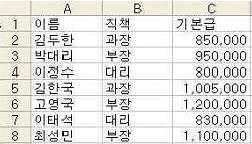
- {=COUNT((B2:B8=“부장”)*(C2:C8>=1000000))}
- ={COUNT((B2:B8=“부장”)*(C2:C8>=1000000))}
- ={COUNT(IF(($B$2:$B$8=“부장”)*($C$2:$C$8>=1000000),1,“”))}
- {=COUNT(IF(($B$2:$B$8=“부장”)*($C$2:$C$8>=1000000),1,“”))}
(정답률: 65%)
23. 다음 중 주어진 수식에 대한 결과값이 옳지 않은 것은?
- =ROUNDDOWN(3.14159, 3) => 3.141
- =NOT(5>6) => TRUE
- =DAYS360(2004-5-1,2004-5-7) => 6
- =COUNT("test",1,2,"A") => 2
(정답률: 62%)
24. [데이터]→[부분합] 명령의 대화상자에 대한 설명으로 다음 중 옳지 않은 것은?
- 그룹화 할 항목 : 그룹으로 묶을 기준이 되는 항목으로 반드시 오름차순으로 정렬되어 있어야 한다.
- 부분합 계산 항목 : 어떤 열에 대해서 함수를 적용할 지를 선택하는 항목으로 여러 열을 선택할 수 있다.
- 사용할 함수 : 그룹에 적용할 함수로 합계, 평균 등이 있다.
- 데이터 아래 요약 표시 : 그룹별로 계산된 항목을 그룹의 아래에 표시할지 위에 표시할지를 설정할 수 있다.
(정답률: 74%)
25. 다음과 같은 조건을 만족하도록 사용자 정의 셀 서식을 작성한 것으로 올바른 것은?
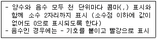
- 0,00#.##;[빨강]-0,00#.##
- _-#,##0.00;[빨강]_-#,##0.00
- #,##0.00;[빨강]-#,##0.00
- *#,##0.00;[빨강]*-#,##0.00
(정답률: 76%)
26. 다음 중 추세선을 작성할 수 있는 차트의 종류로 옳지 않은 것은?
- 도넛형 차트
- 분산형 차트
- 세로막대형 차트
- 주식형 차트
(정답률: 72%)
27. 다음과 같이 셀 위치를 알 수 있도록 인쇄하기 위한 작업 과정에 대한 설명으로 옳은 것은?
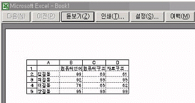
- [파일] -[인쇄영역]-[셀 주소 포함]을 선택한다.
- [파일]- [페이지 설정]을 선택하여 [시트] 탭에서 [눈금선]과 [행/열 머리글]을 설정한다.
- [보기]- [기본]을 선택한다.
- [도구]-[옵션]을 선택하여 [화면표시] 탭에서 [눈금선]과 [행/열 머리글]을 설정한다.
(정답률: 60%)
28. 다음 워크시트에서 [B6] 셀에 컴활 교재비를 납부한 인원을 구하여 ‘2명’과 같이 표시하기 위한 수식으로 옳지 않은 것은?
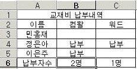
- =DCOUNTA(B2:C5,1,B2:B3)&“명”
- =COUNTIF(B3:B5,“>”“”)&“명”
- =COUNTA(B3:B5)&“명”
- =DCOUNTA(A2:C5,2,B2)&“명”
(정답률: 45%)
29. 다음 프로시저에 대한 설명으로 옳은 것은?
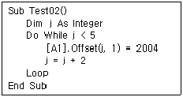
- 실행하면 [B1] 셀에 2004가 입력된다.
- 이 작업은 j 가 5 보다 클 때 실행된다.
- 실행하면 결과 값은 5개 입력된다.
- 실행하면 [B7] 셀에 2004가 입력된다.
(정답률: 53%)
30. 다음 중 하이퍼링크의 삽입 및 편집 화면에 대한 기능 설명으로 올바른 것은?
- ‘표시할 텍스트’란 하이퍼링크 삽입 후 마우스 포인터를 놓았을 때 표시되는 문자열이다.
- ‘스크린 팁’이란 하이퍼링크를 설정하는 셀에 항시 표시되는 문자열이다.
- ‘책갈피’란 하이퍼링크를 만들 수 있는 파일 내의 특정 위치를 나타낸다.
- ‘링크대상’이란 삽입할 하이퍼링크의 종류를 나타낸 아이콘으로 기존 파일이나 웹 페이지에 대한 링크를 만들려면 [현재 문서] 아이콘을 클릭 한다.
(정답률: 62%)
31. 아래의 시트에서 [A2:A5] 영역에 입력되어 있는 수치를 [C2:C5] 영역에 데이터처럼 수정하는 방법에 대한 설명으로 옳은 것은?
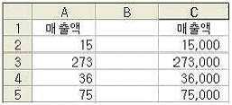
- [A2] 셀에 셀을 이동한 후 =A2*1000 의 수식을 입력한 후 [A5] 셀까지 채우기 핸들을 이용하여 복사한다.
- [도구] 메뉴의 [옵션], [옵션] 대화 상자의 [편집] 탭에서 [고정소수점]을 체크하고 [소수점 위치]에서 -3으로 설정한다.
- [A6] 셀에 1000을 입력한 후 [편집]-[복사]를 실행하고, [A2:A5] 영역을 선택한 후 [편집]-[선택하여 붙여넣기]를 실행하여 [곱하기]를 실행한다.
- [도구] 메뉴의 [옵션], [옵션] 대화 상자의 [편집] 탭에서 [고정소수점]을 체크하고 [소수점 위치]에서 3으로 설정한다.
(정답률: 46%)
32. 다음 중 입력한 데이터에 지정된 표시형식에 따른 결과가 옳은 것은?
- 입력자료 : 24678
표시형식 : #.##
결 과 : 24678 - 입력자료 : 14500
표시형식 : [DBNum2]G/표준
결 과 : 壹萬四阡伍百 - 입력자료 : 2004-04-⑤
표시형식 : mmm-dd
결 과 : Apr-04 - 입력자료 : 0.457
표시형식 : 0%
결 과 : 45.7%
(정답률: 70%)
33. 다음과 같은 시나리오 관리자 대화상자에서 각 버튼에 대한 작업 설명으로 옳지 않은 것은?
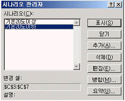
- 표시 : 등록된 시나리오들 가운데 지정한 한 개의 시나리오에 대해 결과를 표시해 준다.
- 추가 : 각 변경 셀에 값(숫자)을 입력하도록 하여 신규 시나리오를 작성할 수 있다.
- 병합 : 다른 워크시트에 등록되어 있는 시나리오를 가져올 수 있다.
- 요약 : 시나리오에 대한 요약표를 사용자가 지정한 시트에 작성할 수 있다.
(정답률: 42%)
34. 다음 중 매크로에 대한 설명으로 옳지 않은 것은?
- 한번 지정한 바로 가는 키는 수정할 수 없다.
- 매크로 기록을 위해서 상대 참조를 선택할 수 있다.
- [도구]-[매크로]-[매크로]에서 매크로 이름을 선택한 후 편집을 실행하여 주석을 삽입할 수 있다.
- 기록된 매크로의 코드는 Visual Basic으로 저장된다.
(정답률: 78%)
35. 다음 차트에 대한 설명 중 옳지 않은 것은?
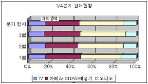
- 기본 축 중 Z축이 설정되어 있다.
- X(항목)축 제목이 설정되어 있다.
- 차트 종류는 3차원 효과의 100% 기준 누적 가로막대형이다.
- [차트]-[3차원 보기]에서 상하/좌우 회전 값을 설정할 수 있다.
(정답률: 63%)
36. 웹 쿼리를 사용하여 웹페이지의 데이터를 엑셀로 가져오는 방법에 대한 설명으로 틀린 것은?
- 웹 쿼리는 검색할 데이터로 항상 웹 페이지에서 테이블만을 대상으로 텍스트를 검색한다.
- 웹 쿼리는 웹 페이지에 있는 데이터를 검색하여 분석을 위해 Excel로 되돌려준다.
- 웹 쿼리를 작성할 때 원하는 웹 페이지의 URL를 입력하여야 한다.
- 웹 쿼리를 사용하여 테이블 하나, 테이블 여러 개 또는 웹 페이지의 모든 텍스트 검색이 가능하다.
(정답률: 56%)
37. 아래에 주어진 워크시트의 작업 결과에 대한 설명으로 옳은 것은?
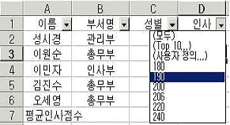
- [데이터]-[그룹 및 윤곽 설정]-[그룹]을 클릭 했을 때의 실행 결과이다.
- 그림과 같이 ‘인사’ 필드의 필터 단추를 클릭 한 후 190을 클릭하면 190 이상인 레코드만 필터링 되어 화면에 표시된다.
- 그림에서 (사용자 정의...)를 클릭하면 두 개의 조건을 ‘그리고’ 혹은 ‘또는’으로 결합하여 설정할 수 있는 대화상자가 나타난다.
- 그림에서 (Top 10...)을 클릭하면 상위 10개의 항목에 대해서 필터링된 결과가 표시되며 표시 개수는 10으로 고정되어 있다.
(정답률: 51%)
38. 다음과 같이 Sheet1의 [A1:C10] 영역에 70을 입력한 후 글꼴 스타일을 굵게, 글꼴 색을 빨강으로 설정하는 프로시저를 완성하기 위해 밑줄(__) 부분에 입력할 내용을 순서대로 옳게 나열한 것은?
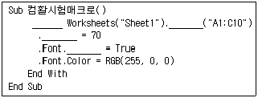
- Sub, Cell, Range, Bold
- Sub, Cell, Value, Bold
- With, Cell, Value, Bold
- With, Range, Value, Bold
(정답률: 60%)
39. 다음 중 그래프를 포함한 워크시트에서 그래프만을 용지 전체에 인쇄하는 방법에 대한 설명으로 옳은 것은?
- 인쇄할 그래프를 오른쪽 마우스로 클릭 하여 [인쇄]를 선택한다.
- 인쇄할 그래프를 클릭 하여 선택 후 [파일]-[그래프 인쇄]를 선택한다.
- [파일]-[인쇄영역]-[그래프]를 선택한다.
- 인쇄할 그래프를 클릭 하여 선택한 후 [파일]-[인쇄] 대화상자에서 [인쇄대상]에서 [선택한 차트]를 선택한다.
(정답률: 58%)
40. 다음 중 [A1] 셀에 수식 =SUMPRODUCT({1,2;3,1},{1,2;3,1}) 을 입력하고 [Enter] 키를 눌렀을 때의 결과 값으로 옳은 것은?
- 24
- 15
- 36
- 70
(정답률: 63%)
3과목: 데이터베이스 일반
41. 지정한 액세스의 개체를 *.xls, *.txt, *.rtf 등과 같이 액세스 형식이 아닌 다른 파일 형식으로 저장하는 매크로 함수는 무엇인가?
- SendObject
- SaveAs
- TransferDatabase
- OutputTo
(정답률: 49%)
42. 액세스에서 폼 작성시 폼의 영역에 대한 설명으로 가장 옳지 않은 것은?
- 폼 머리글 : 폼의 제목과 같은 항목을 지정하는 구역으로 한번만 표시된다.
- 페이지 머리글 : 폼을 인쇄할 때 표시할 정보를 지정하는 구역으로 폼 보기 상태에서는 표시되지 않는다.
- 폼 바닥글 : 모든 인쇄된 페이지의 아래쪽에 날짜나 페이지 번호 등의 부가 정보를 표시한다.
- 본문 : 실제 레코드를 표시하기 위한 구역으로 하나의 레코드만 표시될 수도 있고 여러 레코드가 표시될 수도 있다.
(정답률: 47%)
43. 보고서 머리글의 텍스트 박스 컨트롤에 다음과 같이 컨트롤 원본을 지정하였다. 보고서 미리보기를 하는 경우에 어떠한 결과가 나타나는가? 단, 오늘 날짜가 2004년 1월 6일 화요일이라고 가정한다.
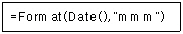
- Jan
- 1월
- 1
- Tue
(정답률: 79%)
44. 회원(회원번호, 이름, 나이, 주소, 사진) 테이블에서 사진 필드에 회원의 사진을 넣고자 한다. 사진 필드의 데이터 형식으로 알맞은 것은?
- OLE 개체
- 통화
- 메모
- 하이퍼링크
(정답률: 81%)
45. 다음에서 디자인 보기로 선택쿼리를 작성한 것으로 가장 옳지 않은 것은?
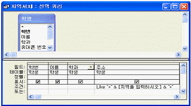
- 질의 결과로 학번, 이름, 학과, 주소 필드의 값을 볼 수 있다.
- 매개변수를 입력해야 한다.
- 질의의 대상이 되는 테이블은 <학생>이며 질의 이름은 <지역서치>이다.
- 입력한 매개변수 값으로 시작하는 모든 값을 찾는다.
(정답률: 47%)
46. 다음 중 보고서에서 그룹 머리글의 '반복실행구역' 속성을 '예'로 설정한 경우에 대한 설명으로 가장 적절한 것은?
- 해당 머리글이 매 레코드마다 표시된다.
- 해당 머리글이 매 페이지마다 표시된다.
- 해당 머리글이 매 그룹의 시작과 끝 부분에 표시된다.
- 해당 머리글이 보고서의 시작과 끝 부분에 표시된다.
(정답률: 58%)
47. 다음 중 SQL 언어의 데이터 정의문(DDL)이 아닌 것은?
- CREATE 테이블명
- UPDATE 테이블명
- ALTER 테이블명
- DROP 테이블명
(정답률: 55%)
48. 액세스의 모듈에 관한 설명으로 틀린 것은?
- 모듈에서는 VBA(Visual Basic for Applicaton)를 사용하여 액세스에서 사용할 프로시저를 만든다.
- 프로시저는 Sub 프로시저와 Function 프로시저가 있다.
- 표준 모듈은 특정한 폼이나 보고서와 연결되어 있다.
- 폼 모듈과 보고서 모듈에는 종종 폼이나 보고서의 이벤트에 응답하여 실행되는 이벤트 프로시저가 포함되기도 한다.
(정답률: 52%)
49. 다음과 같은 직원(사원번호, 부서명, 성명, 직급) 테이블에서 부서별 인원수가 3명 이상인 부서명을 출력하는 질의문은?
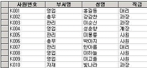
- select 부서명 from 직원 having count(*)>=3 group by 부서명
- select 부서명 from 직원 group by 부서명 having count(*)>=3
- select 부서명 from 직원 where count(*)>=3 group by 부서명
- select 부서명 from 직원 group by 부서명 where count(*)>=3
(정답률: 64%)
50. 다음 중 기본 폼과 하위 폼을 연결하는 방법에 대한 설명으로 가장 적절하지 않은 것은?
- 두개 이상의 연결 필드를 지정할 때는 필드이름을 기호(“&”)으로 구분한다.
- 기본 폼과 하위 폼을 연결할 필드의 데이터 형식은 같거나 호환되어야 한다.
- 기본 폼과 하위 폼을 연결할 필드 이름을 지정한다.
- 한 테이블을 기본으로 해서 또 다른 테이블의 작업을 동시에 할 수 있도록 한다.
(정답률: 56%)
51. 다음 중 기본 키(Primary Key)와 외부 키(Foreign Key)에 관한 설명으로 잘못된 것은?
- 기본 키와 외부 키는 동일한 테이블에 동시에 존재할 수 없다.
- 외부 키 필드의 값은 이 필드가 참조하는 필드의 값들 중 하나와 일치하거나 널(null)이어야 한다.
- 기본 키를 이루는 필드의 값은 null이 될 수 없다.
- 기본 키는 개체무결성의 제약조건을, 외부 키는 참조무결성의 제약조건을 가진다.
(정답률: 62%)
52. 다음 중 UNION 질의에 대한 설명으로 가장 적합한 것은?
- 실행할 때 레코드 검색 조건이나 필드에 삽입할 값과 같은 정보를 입력할 수 있는 대화상자를 표시하는 질의이다
- 레코드의 합계, 평균, 개수, 기타 합계 형식을 계산한 다음, 데이터시트의 왼쪽 아래와 위쪽에 두 그룹으로 결과를 표시하는 질의이다.
- 스프레드시트에서의 피벗 테이블과 흡사하다
- 두 개 이상의 테이블이나 질의에서 대응되는 필드들을 결합하여 하나의 논리적인 테이블을 만드는 질의이다.
(정답률: 70%)
53. <제품> 테이블에서 '판매일자'라는 필드에 2003년 1월 1일부터 2003년 12월 31일까지 날짜만 입력되도록 하는 유효성 검사 규칙으로 가장 옳은 것은?
- in (#2003/01/01#, #2003/12/31#)
- between #2003/01/01# and #2003/12/31#
- in (#2003/01/01#-#2003/12/31#)
- between #2003/01/01# or #2003/12/31#
(정답률: 74%)
54. 다음 보고서에 관한 내용 중 옳지 않은 것은?
- 레이블 컨트롤에 식을 입력하면 인쇄 미리보기에서 식이 입력된 그대로 표시된다.
- 보고서 머리글이나 바닥글에 도메인 계산 함수식을 입력하여 도메인을 계산할 수 있다.
- 주소 레이블 보고서는 주소 레이블 마법사를 통해서만 작성할 수 있다.
- 주소 레이블 마법사를 이용할 때 필드 이름 뒤에 ‘님께’ 와 같은 특정한 문자열을 입력할 수 있다.
(정답률: 57%)
55. 다음 중 기본 키(primary key)의 특징에 대한 설명으로 옳지 않은 것은?
- 널 값을 입력할 수 없다.
- 중복된 값을 입력할 수 없다.
- 입력된 값을 변경할 수 없다.
- 두 개 이상의 필드를 묶어서 기본 키로 설정 할 수 있다.
(정답률: 72%)
56. 다음 SQL문에서 DISTINCT의 의미는?
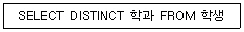
- 중복되는 학과는 한번만 표시
- 모든 학과를 표시
- 학과 순서대로 정렬하여 표시
- 중복적으로 존재하는 학과만 표시
(정답률: 74%)
57. 다음 중 보고서에 대한 설명으로 가장 옳은 것은?
- 보고서 머리글의 내용은 보고서의 모든 페이지의 상단에 인쇄한다.
- 보고서 바닥글의 내용은 보고서의 시작 페이지의 하단에 한번 인쇄한다.
- 보고서에서 정렬하거나 그룹화 할 수 있는 필드나 수식의 개수에는 제한이 없다.
- 특정 필드를 기준으로 그룹화 하려면 <정렬 및 그룹화>에서 그룹 머리글이나 그룹 바닥글 속성을 “예”로 설정한다.
(정답률: 52%)
58. 관련 테이블의 필드에는 기본 테이블의 필드에 입력되어 있는 데이터 이외의 다른 데이터를 입력할 수 없도록 하려면 관계 편집 대화상자에서 어떠한 옵션을 설정해야 하는가?
- 관련 필드 모두 업데이트
- 관련 레코드 모두 삭제
- 두 테이블의 조인된 필드가 일치하는 행만 포함
- 항상 참조 무결성 유지
(정답률: 74%)
59. 데이터베이스의 정규화에 관한 설명으로 옳지 않은 것은?
- 정규화는 중복되는 값을 일정한 규칙에 의해 추출하여 보다 단순한 형태를 가지는 다수의 테이블로 데이터를 분리하는 작업을 의미한다.
- 테이블의 크기가 적어지므로 관리하기가 쉬워진다.
- 정규화를 통하여 데이터를 저장할 공간을 최소화하여 낭비를 방지할 수 있다.
- 정규화를 수행해도 데이터의 중복을 완전히 제거할 수 있는 것은 아니다.
(정답률: 46%)
60. 콤보 상자나 목록 상자 컨트롤의 속성 중에서 목록으로 표시할 데이터를 제공하는 방법으로 테이블/쿼리, 값 목록, 필드 목록 중에서 지정하게 하는 속성은 무엇인가?
- 컨트롤 원본
- 행 원본 형식
- 바운드 열
- 여러 항목 선택
(정답률: 40%)